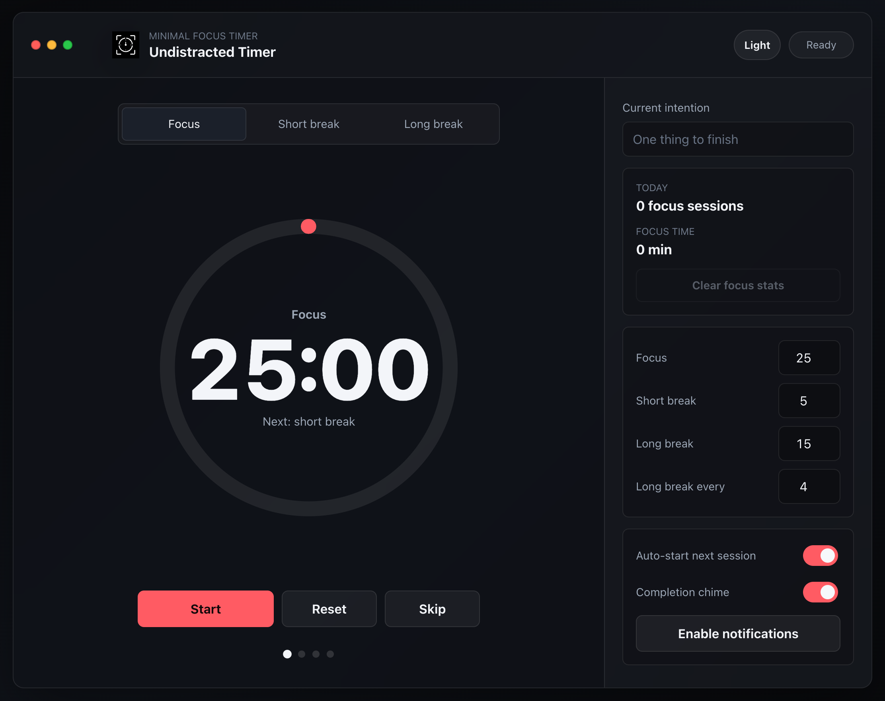

Toufik — front-end developer --:-- local
Building for
the Web.
Small pages and tools with plain HTML, CSS and JavaScript — fast to load, easy to maintain.
Currently rebuilding this portfolio.
I'm Toufik. I'm a mechanical engineer by education and a software developer by choice, interested in understanding how things work and building software that solves real problems.
My background in mechanical engineering taught me to approach problems methodically. My experience in business operations gave me a practical perspective on the tools and systems people rely on every day.
Today, I'm focused on software development, strengthening my fundamentals, and building useful things for the web. I value simplicity, thoughtful design, and code that's easy to understand and maintain.
I believe in doing fewer things well, staying curious, and letting the work speak for itself.
Undistracted Timer
A timer. Nothing else.
Work sessions and breaks. No account, no tracking — it counts down while you work.
JavaScript · No backend
Open timer ↗
-
01
Parallax Path of Focus
A landing page with layered scroll. One idea per screen.
Parallax scroll · JS quote generator
Landing page

-
02
Tremont Restaurant
A restaurant site: menu, hours, contact. Reads well on a phone.
Sticky nav · gallery · story sections
Website

-
03
Survey Form
A form exercise: clear labels, grouped inputs, generous spacing.
JS validation · live progress bar
Practice

Next — sound.undistracted.dev, an ambient mixer for focus. In progress
Say hello.
I build small sites: landing pages, portfolios, simple builds.
hello@undistracted.dev